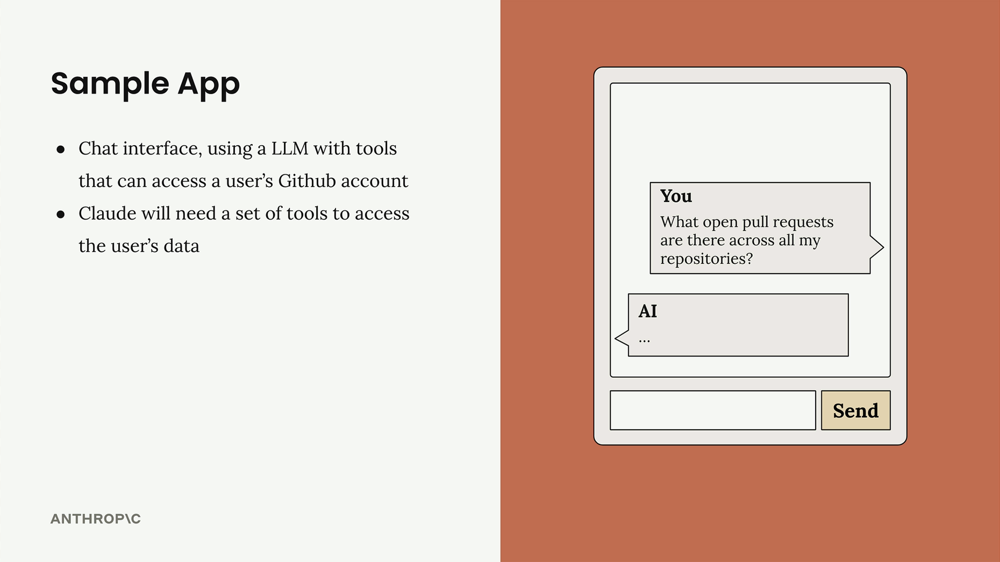
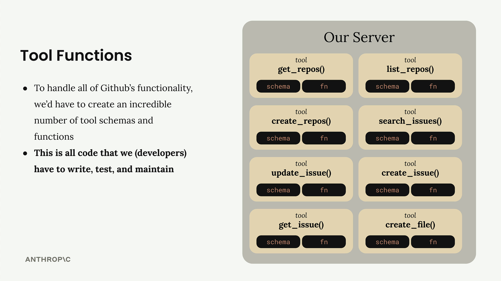

Introduction to Model Context Protocol
MCP คือ communication layer ที่ให้ context และ tools กับ Claude โดยไม่ต้องเขียนโค้ด integration เอง — คอร์สนี้พาสร้าง server/client ด้วย Python SDK
เรียบเรียงตามลำดับบทเรียนจริง: เข้าใจว่า MCP คืออะไรและแก้ปัญหาอะไร → ลงมือสร้าง server → ต่อด้วย client พร้อม resources และ prompts
🔌 MCP คืออะไรและแก้ปัญหาอะไร
ลองนึกถึงแอปแชทที่อยากให้ LLM เข้าถึงเครื่องมือ เช่น GitHub — ปกติต้องเขียนโค้ดเชื่อมต่อเองทุกครั้ง MCP ทำให้สิ่งนี้กลายเป็นมาตรฐานกลาง: แทนที่จะเขียน integration เอง ก็เชื่อมผ่าน MCP ที่ให้ทั้ง tools / resources / prompts ผ่านสถาปัตยกรรม client/server




🧱 ลงมือสร้าง MCP server
คอร์สใช้โปรเจกต์ cli_project.zip สร้าง tools ด้วย Python SDK + decorators และใช้ server inspector เพื่อ debug การทำงานแบบ real-time ก่อนเอาไปต่อกับ client จริง
🔗 ต่อด้วย client, resources และ prompts
ฝั่ง client จะ "คุย" กับ server ผ่าน protocol โดยมี 3 ส่วนหลัก:
Tools
ฟังก์ชันที่ Claude เรียกใช้เพื่อทำงาน/ดึงข้อมูล
Resources
expose ข้อมูลแบบอ่านอย่างเดียว (คล้าย GET handler) ใส่เข้าไปใน prompt ได้ตรง ๆ
Prompts
template คุณภาพสูงที่ client list/retrieve มาใช้พร้อมตัวแปรได้
🎯 สรุปใจความสำคัญ
- MCP = communication layer ที่ให้ context + tools โดยไม่ต้องเขียน integration เอง
- ใช้สถาปัตยกรรม client/server และมี 3 primitives: tools, resources, prompts
- สร้าง server ด้วย Python SDK + decorators และ debug ด้วย server inspector
- resources = ข้อมูลแบบ GET ใส่ใน prompt ได้, prompts = template พร้อมตัวแปร